Science of Science — Paper Curation
Zotero "Science of Science" 컬렉션 | 2026년 출판 논문
Which Stylistic Features Fool ChatGPT Research Evaluations?
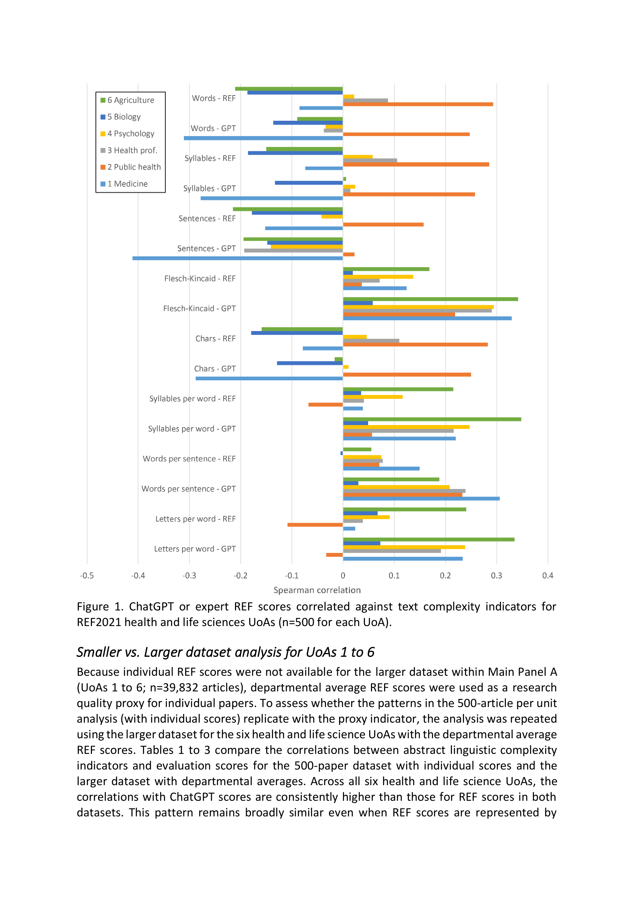
본 논문은 ChatGPT가 학술 논문의 연구 품질을 평가할 때 abstract의 readability 및 linguistic complexity와 같은 문체적 특성에 인간 전문가보다 더 크게 영향을 받는지를 분석한다. UK REF2021에 제출된 99,277편의 journal article을 대상으로 readability indicator와 ChatGPT 점수 간의 상관관계를 조사한 결과, ChatGPT는 언어적으로 복잡한 abstract에 체계적으로 더 높은 점수를 부여하는 경향이 있음을 발견하였다.
LLM 기반 연구 평가의 실질적 위험을 대규모 데이터로 설득력 있게 입증한 시의적절하고 중요한 연구로, Science of Science 및 AI governance 분야 모두에 함의가 크다.
Polymer Science Research in India: A Scientometrics Study
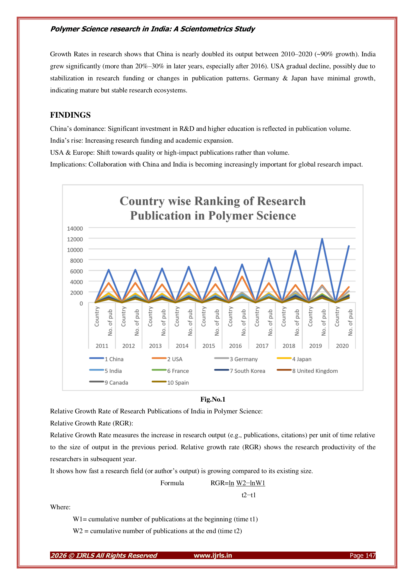
본 논문은 Web of Science 데이터베이스를 활용하여 2010-2020년 인도의 Polymer Science 분야 연구 생산성을 계량서지학적으로 분석한다. 인도가 해당 분야에서 세계 2-3위권의 연구 산출량을 보이며, IIT Delhi가 기관별 최다 출판을 기록했음을 보고한다.
기본적인 기술통계 수준의 scientometric 분석으로, 방법론적 깊이와 학술적 기여가 매우 제한적이며, 데이터 범위 불일치 등 기본적인 품질 문제가 있다.
Risk and Artificial Intelligence Adoption: A Scientometric and Thematic Evolution Analysis Based on Scopus and Web of Science (1990-2025)
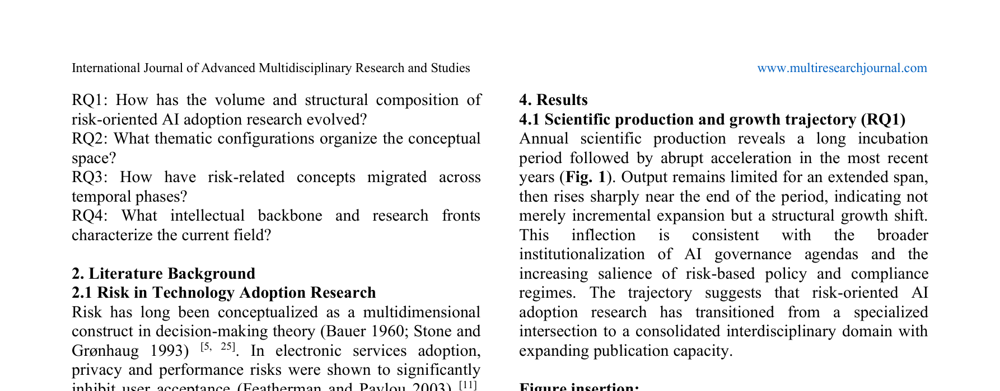
본 논문은 1990-2025년 Scopus와 Web of Science에 인덱싱된 612편의 peer-reviewed 문헌을 대상으로 risk와 AI adoption의 교차 영역을 PRISMA 기반 scientometric 방법론으로 분석한다. Thematic mapping, thematic evolution (Sankey diagram), co-citation network, collaboration mapping을 통해 이 분야가 초기 reliability 중심에서 privacy/bias/accountability의 normative 전환을 거쳐 compliance 및 risk-based governance로 수렴하고 있음을 밝힌다.
Risk-AI adoption nexus의 지적 구조를 체계적으로 매핑한 유용한 bibliometric 연구이나, 짧은 분량으로 인해 분석의 깊이가 다소 아쉬우며, 검색 전략과 코퍼스 크기의 적절성에 대한 추가 논의가 필요하다.
Organisational Accounts Engaged in Scholarly Communication on Twitter: Patterns of Presence, Activity and Engagement

본 논문은 GRID, ROR, Overton 등 조직 데이터베이스와 Altmetric, Crossref Event Data 등 altmetric 데이터를 연계하여 학술 출판물을 트윗한 9,842개의 연구 및 정책 관련 조직 계정을 식별하고, 이들의 소셜미디어 자본(social media capital), 트윗 활동(tweeting activity), 참여 수준(engagement level)을 분석한 대규모 연구이다. 조직 계정은 개인 사용자 대비 팔로워 기반과 학술 트윗 비율에서 우위를 보이나, 인용(quote)이나 답글(reply) 등 대화형 참여에서는 약세를 보인다.
학술 커뮤니케이션에 참여하는 조직 계정에 대한 체계적 데이터셋과 방법론을 최초로 제시한 의미 있는 연구이나, 트위터 플랫폼의 급격한 변화로 인해 결과의 시의성에 대한 고려가 필요하며, 기술적 분석(descriptive analysis)에 머물러 인과적 메커니즘에 대한 탐구가 부족하다.
Modeling Changing Scientific Concepts with Complex Networks: A Case Study on the Chemical Revolution
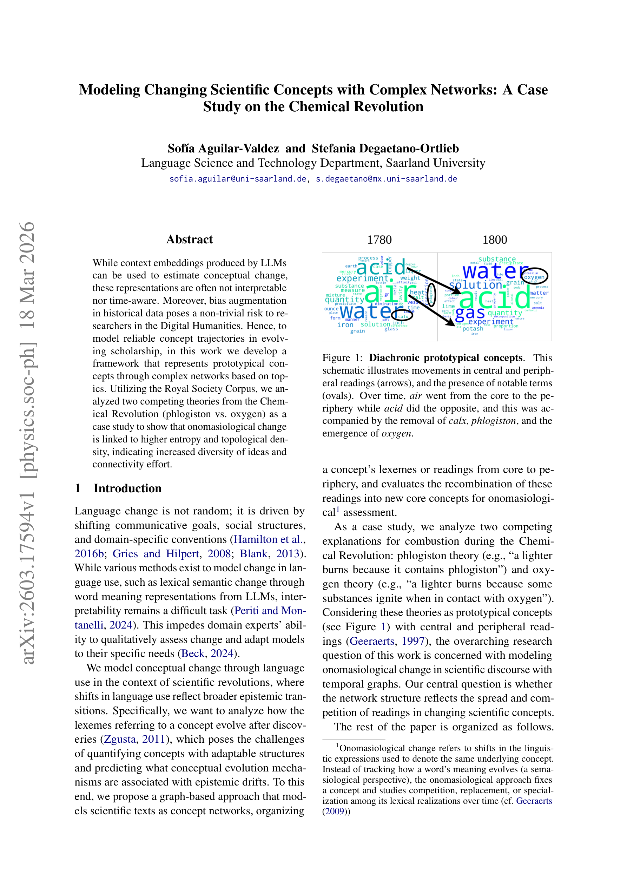
본 논문은 LLM 기반 문맥 임베딩의 해석 가능성(interpretability) 한계를 극복하기 위해, 토픽 모델링 기반 복잡 네트워크(complex networks)로 과학적 개념의 변화 궤적을 모델링하는 프레임워크를 제안한다. Royal Society Corpus를 활용하여 화학혁명(Chemical Revolution) 시기 phlogiston 이론에서 oxygen 이론으로의 개념 전환을 사례 연구로 분석하며, onomasiological change(동일 개념에 대한 언어적 표현의 변화)가 높은 entropy 및 위상적 밀도(topological density) 증가와 연관됨을 보여준다.
과학적 개념 변화를 해석 가능한 네트워크로 모델링하는 독창적 접근이나, 단일 사례 연구에 머물러 프레임워크의 일반화 가능성이 입증되지 않았으며, 방법론적 선택(토픽 수, 샘플링 전략)에 대한 민감도 분석이 부족하다.
Interdisciplinary Papers Supported by Disciplinary Grants Garner Deep and Broad Scientific Impact
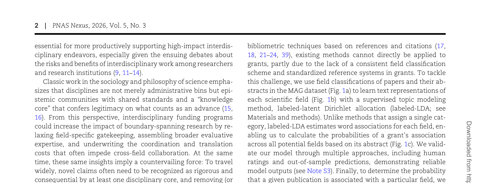
본 논문은 26개국 164개 펀딩 기관의 350,000건 연구비와 이로부터 산출된 130만 편의 논문(1985-2009)을 분석하여, 학제간(interdisciplinary) 연구비가 의도대로 학제간 논문을 생산하지만, 그 영향력(impact)은 오히려 분과학문적(disciplinary) 연구비에 의해 지원된 학제간 논문에 비해 현저히 낮음을 발견했다. 깊은 분과학문적 기반(disciplinary anchor)을 가진 연구비가 지원한 학제간 논문이 자기 분야 내부와 외부 모두에서 불균형적으로 높은 인용을 획득한다.
학제간 연구비의 효과에 대한 통념을 대규모 데이터로 정면 도전한 매우 중요한 연구로, "분과학문적 연구비가 지원한 학제간 논문이 가장 높은 영향력을 획득한다"는 반직관적이면서도 강건한(robust) 발견은 과학정책에 실질적 함의를 가진다.
An Empirical Analysis of Open Access Citation Advantages in Library and Information Science
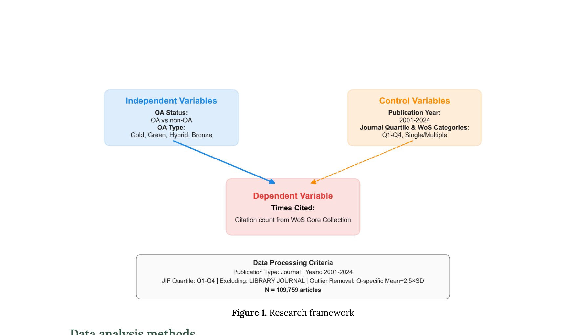
본 연구는 Web of Science에서 수집한 109,759편의 문헌정보학(LIS) 분야 학술 논문(2001-2024)을 분석하여, OA(Open Access) 논문의 인용 우위(citation advantage)가 LIS 분야에서는 조건부적(conditional)임을 밝혔다. 전체적으로 Non-OA 논문이 OA 논문보다 약간 더 높은 평균 인용(18.83 vs. 17.90)을 받았으나 효과 크기는 극히 미미하며, OA 유형별로는 Green OA가 가장 높은 인용(28.55)을 보였고, OA 인용 우위는 시간이 지남에 따라 크게 감소하고 있다.
LIS 분야의 OA 인용 효과를 다각도로 분석한 유용한 기여이나, self-selection bias 등 핵심 교란변수의 미통제와 비교적 단순한 통계 분석(회귀 모델 없이 t-test/ANOVA 중심)으로 인해 분석적 깊이가 제한적이다.
Authorship, Titles and Open Access as Drivers of Citation Performance in Orthopaedics: A Scientometric Analysis
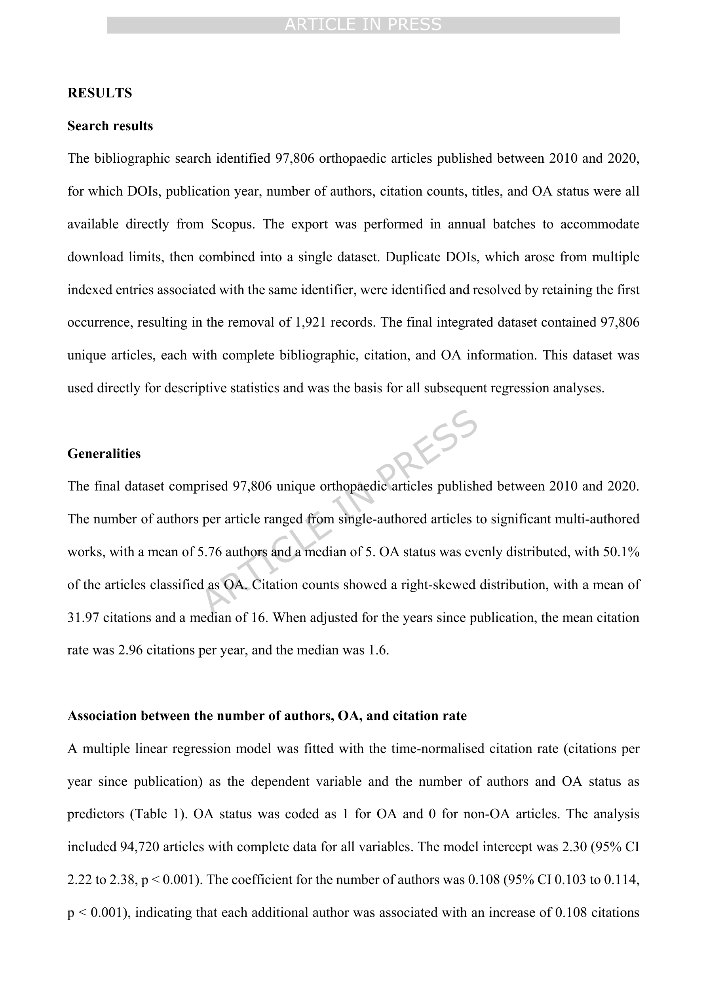
본 논문은 Scopus에서 수집한 97,806편의 정형외과(orthopaedics) 논문(2010-2020)을 분석하여, 저자 수, OA 상태, 제목 특성(길이, 구두점, 대문자 사용), 연구 설계 유형이 시간 정규화된 인용률(citations per year)에 미치는 영향을 다중 선형 회귀와 비교 통계 분석으로 조사했다. 저자 수 증가(+0.108 citations/year per author), OA(+0.175 citations/year), 콜론 사용(+0.314), 대시 사용(+0.187)이 인용률을 높이며, 물음표(-0.476)와 전체 대문자 제목은 인용을 감소시킨다.
대규모 데이터(97,806편)를 활용한 포괄적 분석이나, 극히 낮은 설명력의 모델에서 도출한 결론의 실용적 가치가 제한적이며, 교란변수 통제 부재로 제목 구성이나 저자 수와 인용률 간의 관계에 대한 의미 있는 추론이 어렵다.
Bridging the Gap between Science and Society: Mapping Libraries' Strategies for Engaging in the Research Impact Process through Semantic Analysis
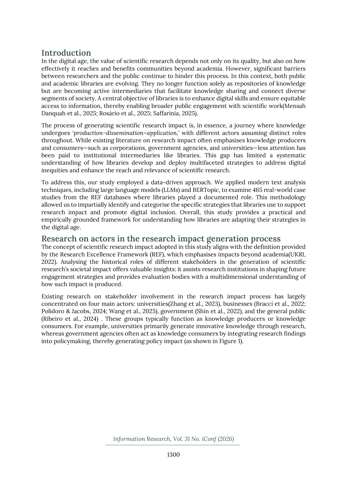
본 논문은 영국 Research Excellence Framework(REF)의 465개 사례를 분석하여, 도서관이 과학 연구의 사회적 영향(societal impact) 창출 과정에서 수행하는 역할과 전략을 체계적으로 규명한다. LLM과 BERTopic을 결합한 하이브리드 접근법으로 다섯 가지 핵심 전략을 도출하였으며, 도서관의 기여가 Arts and Humanities(76%) 분야와 문화적 영향(67%)에 집중되어 있음을 밝혔다.
도서관의 research impact 기여를 체계적으로 분석한 흥미로운 시도이나, 영국 REF에 국한된 데이터와 낮은 클러스터링 품질, 그리고 Arts and Humanities 편중이라는 한계가 결론의 일반화 가능성을 제약한다.
OpenAlex in Focus: Metadata Quality of Publication Type and Language Fields in an Open Peer Review Corpus
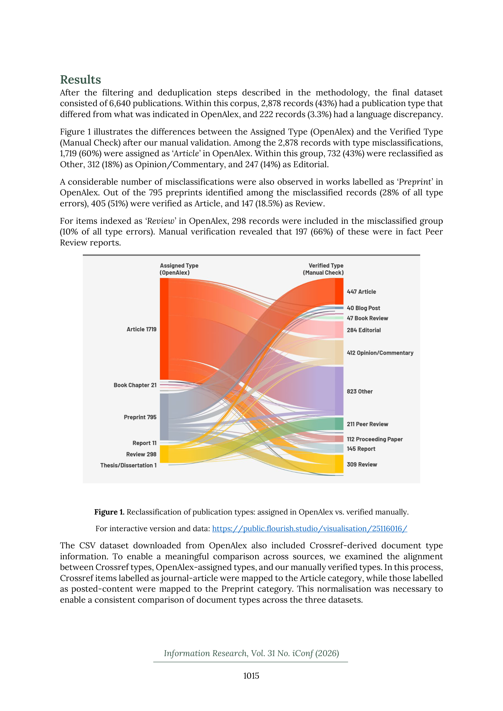
본 논문은 OpenAlex의 메타데이터 품질을, publication type과 language 필드를 중심으로 실증적으로 검증한다. Open peer review 관련 6,640개 레코드를 수동 검증한 결과, 43%에서 publication type 불일치, 3.3%에서 language 불일치가 발견되었으며, OpenAlex가 이질적인 문서 유형을 'Article'로 과도하게 분류하는 구조적 경향을 밝혔다.
OpenAlex 메타데이터의 publication type 오류를 대규모 수동 검증으로 실증한 가치 있는 연구로, bibliometric 연구자들에게 데이터 전처리의 중요성을 환기시키며, 특히 43%라는 높은 불일치율은 OpenAlex 사용자들에게 실질적 경고를 제공한다.
Information Pathways in Online Science Communication: The Role of Platform Actors and News Media

본 논문은 COVID-19 관련 과학 논문의 온라인 확산 경로를 소셜 미디어(Twitter)와 뉴스 미디어를 아우르는 multi-level 관점에서 분석한다. 1.24M 트윗과 211K 뉴스 기사를 분석하여, 조직적 contrarian 네트워크가 반합의(anti-consensus) 전문가를 불균형적으로 증폭시키는 현상, 그리고 뉴스 미디어 보도가 Twitter superspreader 활동에 시간적으로 후행하는 information pathway를 발견하였다.
COVID-19 과학 커뮤니케이션의 multi-level 정보 경로를 포괄적으로 분석한 우수한 연구로, 조직적 contrarian 증폭과 Twitter-to-news precedence라는 두 가지 핵심 발견은 과학 커뮤니케이션과 misinformation 연구에 중요한 함의를 제공한다.
BibFusion: A Python Package to Integrate, Deduplicate, and Harmonize Exported Bibliographic Records from Scopus and Web of Science for Bibliometric Analysis

본 논문은 Scopus와 Web of Science(WoS)의 서지 데이터를 통합, 중복 제거, 정규화하여 분석 가능한 단일 코퍼스를 생성하는 Python 패키지 BibFusion을 소개한다. DOI 기반 1차 매칭과 보수적 fallback 전략, OpenAlex를 통한 식별자 보강, 그리고 canonical PersonID 기반 저자 동음이의어 해소를 핵심 기능으로 하며, 7개의 관계형 엔티티 테이블과 감사 추적(audit artifact)을 산출한다.
Scopus-WoS 통합의 실질적 필요성을 다루는 유용한 소프트웨어 기여이나, 단일 사례 시연에 그치고 기존 도구와의 정량적 비교가 없어 실질적 우위를 입증하지 못하며, 논문의 서술이 반복적이고 기술적 깊이가 부족하다.
Rethinking Thematic Evolution in Science Mapping: An Integrated Framework for Longitudinal Analysis

본 논문은 science mapping의 종단적(longitudinal) 주제 진화 분석에서 존재하는 방법론적 비일관성을 해결하는 통합 프레임워크를 제안한다. 기존 접근법은 cross-sectional 주제 탐지에는 관계형 네트워크 클러스터링을, inter-temporal 연결에는 집합론적 keyword overlap을 사용하는 구조적 비대칭이 있었다. 제안된 프레임워크는 fuzzy document affiliation, PageRank 가중 lineage strength, 그리고 dual-thresholding 기반 자동 계보 탐지를 하나의 관계형 아키텍처 내에서 통합한다.
Science mapping의 종단적 분석에서 오랫동안 간과되어 온 방법론적 비일관성을 정확히 진단하고, 수학적으로 엄밀하면서도 해석 가능한 통합 프레임워크를 제시한 탁월한 방법론 논문으로, bibliometrix 패키지 통합을 통해 실질적 영향력도 기대된다.
The Price-Pareto Growth Model of Networks with Community Structure
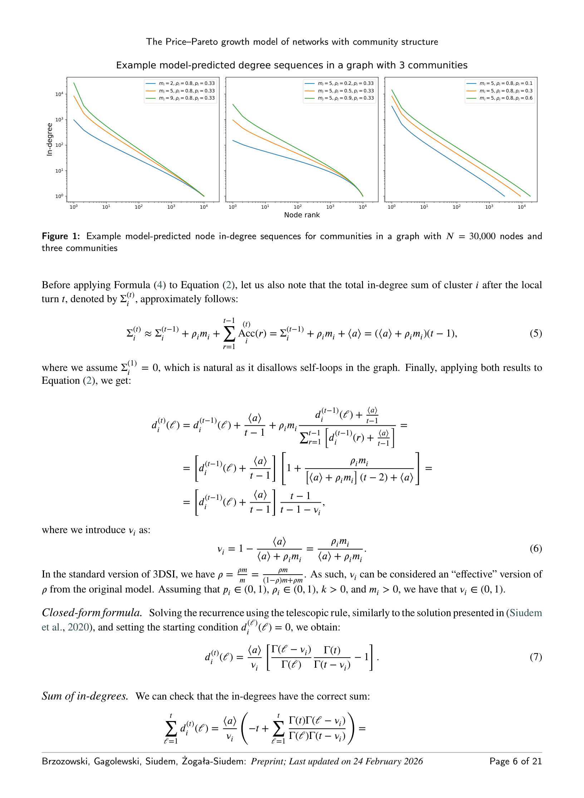
본 논문은 커뮤니티 구조를 가진 네트워크의 degree sequence를 모델링하기 위한 새로운 분석적 프레임워크를 제안한다. 기존의 3DSI(Price-Pareto) 모델을 확장하여, 각 커뮤니티별로 고유한 성장 파라미터(참고문헌 수 $m_i$, preferential attachment 비율 $\rho_i$, 커뮤니티 확률 $p_i$)를 부여함으로써 과학 분야 간 인용 문화의 이질성을 포착한다. 각 커뮤니티의 citation count 분포가 Pareto type II 분포로 수렴함을 증명하고, Gini index에 대한 해석적 공식을 도출하였다.
커뮤니티 구조를 갖는 네트워크 성장 모델의 중요한 이론적 공백을 메우는 수학적으로 엄밀한 논문으로, 해석적 공식의 도출이 인상적이나, 실증 실험의 범위를 넓히고 동적 커뮤니티 구조로의 확장이 향후 과제로 남아 있다.
Open Datasets in Learning Analytics: Trends, Challenges, and Best PRACTICE
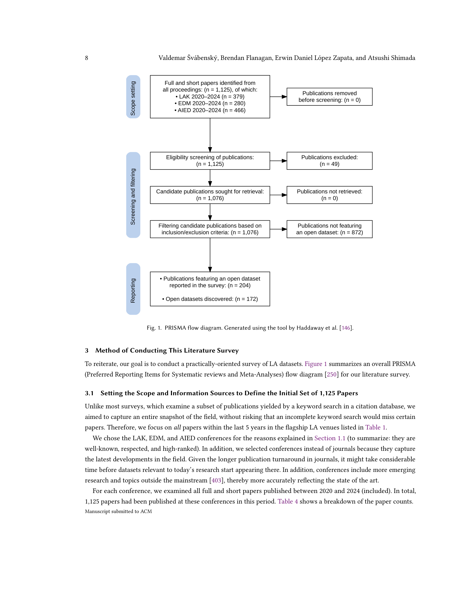
본 논문은 Learning Analytics(LA) 분야의 open dataset 현황에 대한 최대 규모의 체계적 서베이를 수행하였다. 2020-2024년 LAK, EDM, AIED 세 주요 학회에서 발표된 1,125편의 논문을 수동으로 검토하여 204편의 논문에서 사용된 172개의 고유한 open dataset을 발견, 분류, 분석하였다. 이 중 143개는 기존 서베이에서 포착되지 않은 새로운 데이터셋이다. 또한 연구자들을 위한 8개 항목의 PRACTICE 가이드라인 체크리스트를 제시하였다.
방법론적으로 엄밀하고 실용적 가치가 높은 서베이 논문이나, 주된 기여가 데이터셋 목록의 확대와 가이드라인 제안에 머물러 있어 이론적 깊이는 제한적이다. LA 연구 커뮤니티에는 중요한 자원이 될 것이나, science of science 관점에서의 분석적 통찰은 다소 부족하다.
The Selective Use of Physics Knowledge in Policy: How Interdisciplinary Physics Bridges Subfields and Shapes Policy Influence
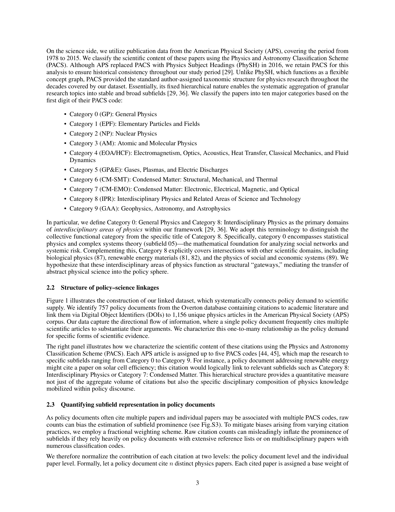
본 논문은 물리학 지식이 정책 문서에 어떻게 선택적으로 동원되는지를 실증적으로 분석한다. Overton 정책 데이터베이스와 American Physical Society(APS) 출판물을 연결한 데이터셋을 구축하여, 정책 문서가 물리학 연구 생산량과는 상이한 구조로 물리학 지식을 인용함을 보인다. 핵심 발견은 학제간(interdisciplinary) 물리학이 정책 담론 진입의 "gateway" 역할을 하지만, 정책 내 downstream influence는 지구물리학(Geophysics) 분야가 약 24% 더 높다는 것이며, 이는 visibility와 influence의 분리를 실증적으로 입증한다.
Science-policy interface에서 visibility와 influence의 분리라는 중요한 개념적 기여를 제공하며, 학제간 연구의 정책적 역할에 대한 실증적 근거를 체계적으로 제시한 우수한 연구이다. 표본 규모 확대와 인과 추론 방법론의 보강이 이루어진다면 더욱 강력한 결론을 도출할 수 있을 것이다.
The Rise of Large Language Models and the Direction and Impact of US Federal Research Funding

본 논문은 LLM(Large Language Model)의 부상이 미국 연방 연구 자금 시스템을 어떻게 재편하고 있는지를 대규모 실증 분석으로 밝힌다. NSF와 NIH의 비공개 제안서(funded + unfunded)와 공개 수상 데이터를 결합하여, LLM 사용이 2023년부터 급격히 증가하되 bimodal 분포를 보이며, LLM 사용이 높을수록 연구 제안의 semantic distinctiveness가 낮아져 최근 지원된 과제와 유사해지는 경향을 발견하였다. 이 효과는 기관에 따라 상이하여, NIH에서는 LLM 사용이 채택 확률 및 논문 생산량과 양의 상관을 보이나 NSF에서는 유의미한 관계가 없다.
LLM이 과학 연구 자금 시스템에 미치는 영향을 최초로 대규모 실증 분석한 획기적 연구로, 비공개 제안서 데이터의 활용, 기관별 차별적 효과의 발견, 그리고 idea homogenization에 대한 경고 등 science policy에 즉각적 함의를 갖는다. Dashun Wang 그룹의 science of science 연구 역량이 돋보이는 논문이다.
Public Profile Matters: A Scalable Integrated Approach to Recommend Citations in the Wild
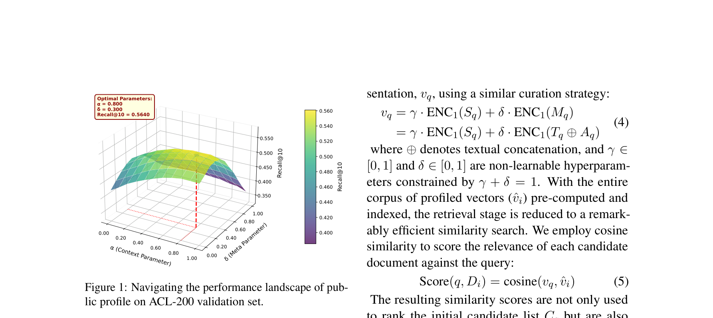
본 논문은 local citation recommendation (LCR) 문제를 해결하기 위해 두 단계 시스템을 제안한다. 첫 번째 단계인 **Profiler**는 논문의 "public profile" (인용 네트워크 내에서 해당 논문이 어떻게 인식되는지)을 활용하는 비학습(non-learnable) 검색 모듈이며, 두 번째 단계인 **DAVINCI**는 검색 단계의 confidence prior와 semantic 정보를 adaptive vector-gating 메커니즘으로 융합하는 reranker이다. 또한 기존 transductive 평가 방식의 한계를 지적하고, 시간 순서를 엄격히 준수하는 **inductive evaluation setting**을 도입하여 현실적 평가 프레임워크를 제시한다.
Non-learnable retrieval과 lightweight reranking이라는 실용적 설계 철학 위에, inductive evaluation이라는 방법론적 기여까지 더해 LCR 분야에 의미 있는 진전을 이룬 논문이다. 특히 110M 모델이 수십억 파라미터 모델을 능가한다는 결과는 domain-specific 설계의 가치를 강하게 시사하지만, popularity bias의 암묵적 잔존과 단일 실행 보고는 보완이 필요하다.
제외된 항목
03_INTERNATIONAL_JOURNAL_OF_SCIENTOMETRICS— not a paper or corrupted PDF05_Real-World_Evidence_in_the_First_Round_o— not a paper or corrupted PDF
Claude Code powered by Oh-My-ClaudeCode, SKILL by Jehyun LEE jehyun.lee@gmail.com